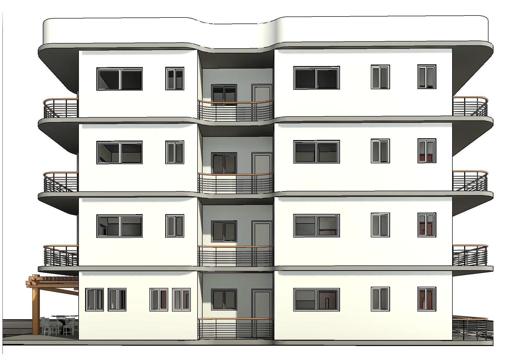
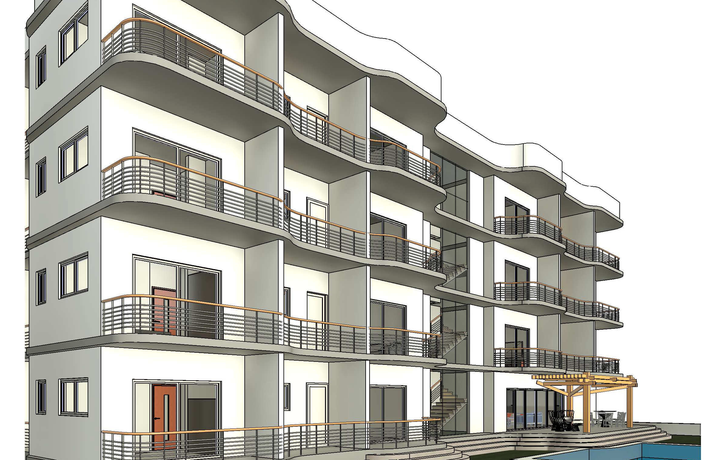

Rigueur & Volume
La Villa Boumsong est un projet d'envergure qui démontre une maîtrise poussée des outils de conception BIM. Le projet s'articule autour de plusieurs niveaux avec une gestion précise des espaces techniques et de vie.
La modélisation complète sous Revit a permis d'anticiper les contraintes structurelles et d'optimiser l'implantation du bâtiment sur son terrain. Les rendus techniques témoignent de la précision des détails architecturaux.
Type
Villa de Haut Standing
Phase
Dossier Technique / BIM
Logiciels
Autodesk Revit, ArchiCAD

